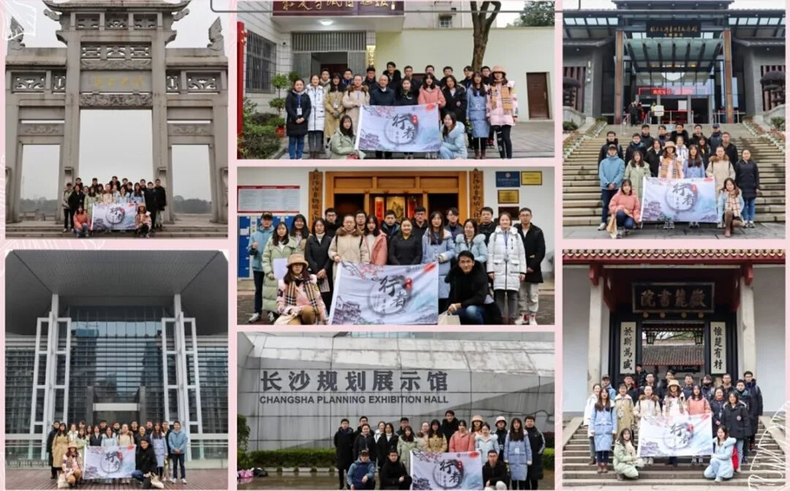
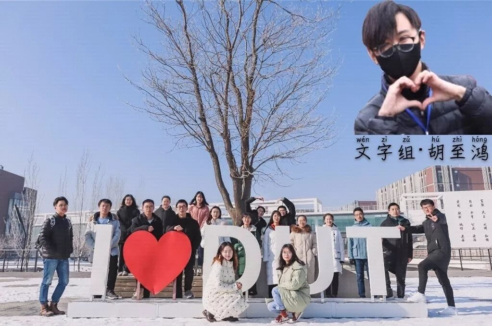
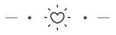
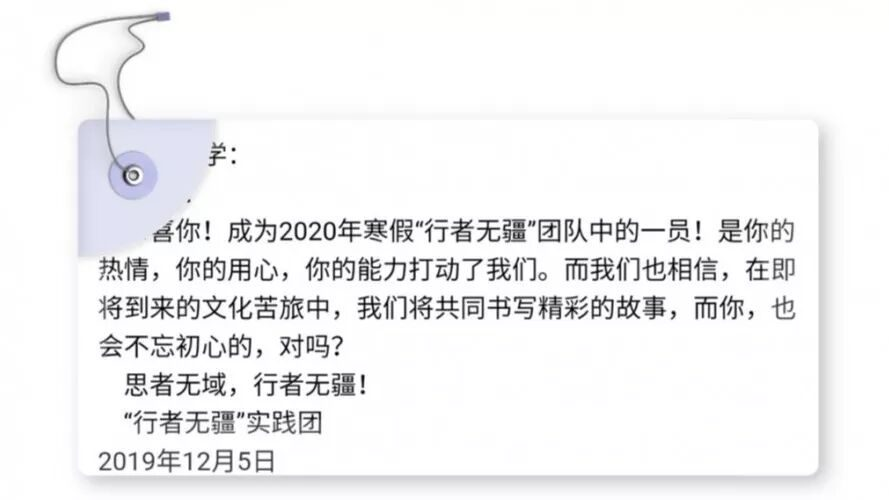
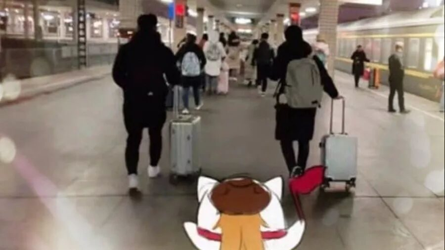
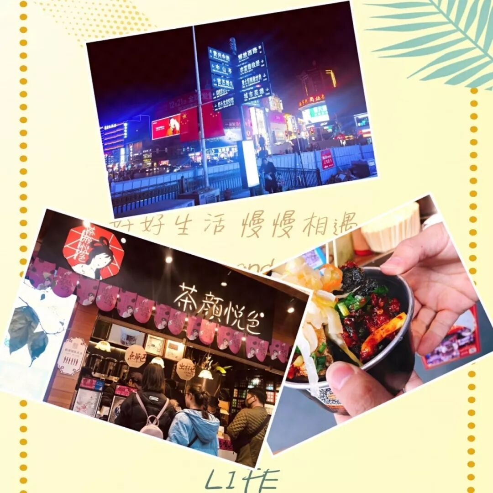
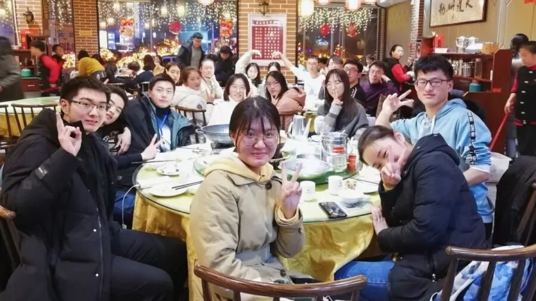

【赋墨沉湘·三】为你们，我愿行千千万万。

我总要走些曾陌生的路
看些曾陌生的风景
听些陌生的歌曲
但在某个陌生的时间
我发现
其实所谓的陌生
不过是我恰好错过了
与你们所有的遇见


“你们，
是我最想找到的答案”
真的不过是一念之间
报名表下载填写发送一气呵成
甚至没有准备面试讲稿
提着简历就没头没脑的前去面试
记得那天的夜风是无比寒冷的
透过几层外套钻进脑袋
在走廊等候面试时才一丝一丝又吹出来
浑身发抖
面试从头到尾不知所言
看着面试小哥哥小姐姐的脸竟觉有点好看
顺带着发一小点花痴
进门？
出门。
那估计没戏了
被录取的一刻整个人或许断了线
盯着消息反复确认
不是录取了一个重了名的人发错了手机
经历大脑重启失败好几次后
终于激动得说不出一句话

“自从遇见
人生苦短
但甜很长”
见面会腼腆着自我介绍
校园内调研时食堂门口绝望地蹲熟人未遂
队长一字一句婆婆妈妈
排集体照那寒风凛冽中真·透心凉
不停问自己当初抽的什么五香麻辣疯
但当我们拖着行李
从学校出发的一刻
哦，好吧，值了。
打死不睡觉的打牌四人组
泡面可以从底部戳漏的神仙操作
不明觉厉的鼾声四起俱乐部
被车晃来晃去撞墙到自闭的我
都曾以为过不去二十八个小时
没成想竟短成这样
车窗外的景色不停的换
不知列车终究开过了几个季节
一程夏天一程秋
却把这冬天变成了春天
大半夜空着肚子千辛万苦找到预定好的旅店
没成想外卖小哥还没有我们认路熟练
一头倒在床上
累到进食甚至想靠输液
想着明天还要早起
哦我的天老爷……

“太阳在，为了白昼
月亮在，为了夜晚
而你们在，是为了永远”
地铁的闸门和手机软件总是会看对方不顺眼
导航路线是哪一条可能还得看是什么软件
地铁总会满得再也容不下那一两个人
车内的弟兄们也总喜欢望着没上车的孤儿们说再见
我们一起带着蓝牙耳机听岳麓千年弦歌
一起观察湘绣一针一线里的奥秘
一起看古代的灯究竟省油不省油
又一起被老先生精湛的剪纸技艺惊到不能做声
我们一起在长沙市规划馆里玩到不想走
一起在简牍博物馆里找差错
一起打着冷颤游览刘少奇故居
又一起体悟伟大的毛主席曾经生活过得一点一滴
我们忘不了一起在大巴上睡到不省人事
也忘不了东北老板娘餐后还要送上的几个饺子
忘不了毛泽东像前念过的诗
更忘不了橘子洲一行人徒步走去饭店的一瘸一拐
忘不了小吃街遍布我们的身影
忘不了每一个茶颜悦色窗口随时都排着长队
忘不了冷得排队把手插到前一个人的帽子后面
更忘不了最后一日团队会议
话音还没落
自己就默默地湿了眼眶
我爱每一份一起熬过的夜
也爱每一条一起逛过的街
我爱每一顿一起吃过的饭
更爱每一个一起笑过的人

“因为会再见
所以我等”
我搞不懂时间
真是个奇怪的东西
上课的一节更比六节长
干嘛到了现在就似箭如梭？
就像手里握着沙子一般
时间总想方设法撬开我的指缝
让重要的人和事淡出我的生活
无奈
却不得不珍视
失去伴随的疼痛
习惯性和你们并肩
再看这似曾陌生的台上戏
才发现早已成歌的
原来心碎离别的戏中人
时光让我们相遇
却又让我们不得不互道珍重
或许生活给予我们最好的安排
就叫做你好与再见了罢
曾经憧憬留住时光美好的角落
再回首
原来更值得敬重的
是岁月中动人的阴差阳错
致行者无疆：
我许此情
从须臾到不朽
从一叶到知秋
不惧白驹一骑
人海安家
只为你
只为你们

来源 | 行者无疆实践团
文字 | 胡至鸿
排版 | 吕丰元
审核 | 段智然 康艳虎 黄玲
行者无疆实践团
QQ：2758025831
随行者一起认识世界
长按二维码